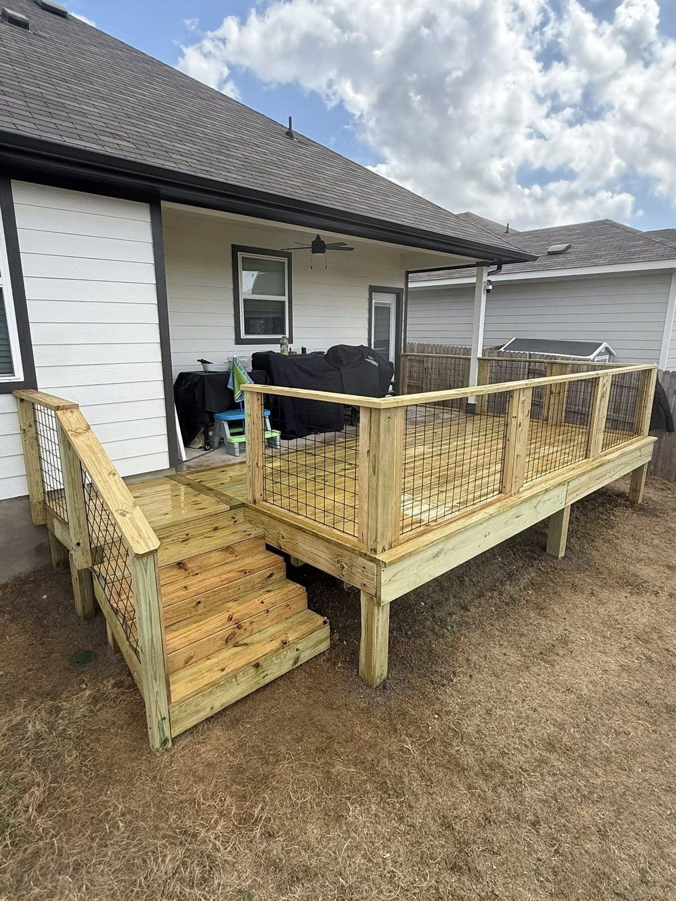
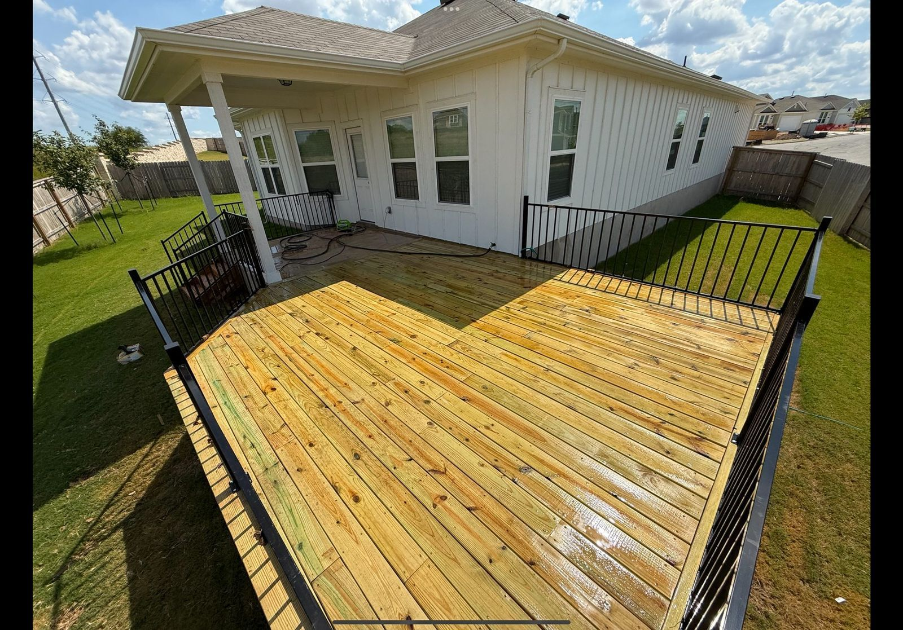

Most decks in Austin do not need to be torn out. They need the right repair at the right time.
A deck that looks tired from the yard is often sitting on a frame that has years left in it, and a deck that looks fine from the back door can be quietly rotting where the frame meets the house. The difference between a weekend repair and a full rebuild is almost always underneath the boards.
Here is what deck repair costs in Austin in 2026, what we look at to decide between repairing and replacing, and the problems we find most often on Central Texas decks.
Deck repair cost in Austin, 2026
Most deck repairs we do in the Austin area, including replacing boards, rebuilding a railing or fixing stairs, land between $1,800 and $7,000. Where a job falls in that range depends on how much of the deck is involved and whether the frame underneath needs work.
| Option | Typical cost in Austin | When it makes sense |
|---|---|---|
| Deck repair (boards, railing, stairs) | $1,800 to $7,000 | The frame, footings and ledger are sound |
| New pressure-treated deck, 300 sq ft | $9,000 to $13,500 | The frame is failing or the layout no longer works |
| New cedar deck, 300 sq ft | $15,000 to $22,500 | You want a better-looking wood deck |
| New composite deck, 300 sq ft | $18,000 to $30,000 | You want to stop staining for good |
Those replacement numbers come straight from our Austin deck cost guide, which explains what moves a new build up or down. They are here for comparison, because the honest repair conversation always starts with what replacing would cost.
What decides whether a repair is enough
When we look at a deck, we are really asking one question: is the structure good? Everything else follows from that.
- The frame. Joists and beams should be firm when you press a screwdriver into them. Soft, spongy wood or wood that crumbles means rot, and rot in the frame is not something you patch around.
- The ledger. On an attached deck, the ledger is the board bolted to the house. If it was never flashed, water has been running behind it for years. A failed ledger is the most common reason a deck that looks fine still needs to be rebuilt.
- The posts and footings. Posts set directly in concrete tend to rot right at the top of the concrete, where water sits. A post that moves when you push it is a structural problem, not a cosmetic one.
- The hardware. Older decks were often built with nails and connectors that were not rated for treated lumber. Corroded joist hangers and rusted-through fasteners mean the frame is held together by habit.
- Height. A ground-level deck with a soft spot is an inconvenience. A deck several feet off the ground with a soft spot is a safety problem, and we treat it that way.
If the frame, ledger, posts and hardware are sound, a repair is usually the right call and the money goes a long way. If any of them have failed, we will tell you so, even if it means recommending the bigger job.
The deck repairs we do most often in Austin
Replacing deck boards
Deck boards take all the weather. Austin sun dries them out, they crack and split, and boards near the house or under a downspout rot first.
When the frame is good, pulling the old boards and putting down new ones changes how the whole deck looks and feels, and it is the single best-value repair we do. It is also a chance to switch materials: new composite boards can go on a sound wood frame if the joist spacing suits them, which our Trex, TimberTech and Fiberon comparison covers.

Rebuilding railings
Railings loosen over time, especially where the posts are attached to the outside of the deck. A wobbly railing is one of the most important things to fix on a raised deck. Decks more than 30 inches above grade need a guardrail, and it has to be solid, not just present.
Fixing or rebuilding stairs
Stairs see the most foot traffic and often sit closest to the ground, where moisture collects. Rotted stringers, the sloped boards that carry the steps, are a common find. Stairs are usually rebuilt rather than patched, because the pieces depend on each other.
Replacing a rotted joist or two
Sometimes the rot is local: one or two joists under a planter, a hot tub or a leaking hose bib. If the damage is limited and the rest of the frame is sound, we can replace or reinforce those joists. If we find it everywhere we look, that is the sign to stop repairing.
Cleaning, sealing and staining
A deck that is structurally fine but gray, rough and blotchy usually needs cleaning and a fresh stain, not new wood. Staining on schedule is the cheapest way to make a wood deck last. In Austin sun, pressure-treated and cedar decks generally need it every two to three years.
Not sure if your deck needs a repair or a rebuild? John will look at the frame, the ledger and the posts, and tell you honestly which one you are looking at.
Get a free deck repair quote →Signs your deck needs attention now
- A board or stair tread feels soft or bouncy underfoot.
- The railing moves when you lean on it.
- The deck has started to pull away from the house, or you can see a gap at the ledger.
- Posts are leaning, or the wood at the base of a post is dark and crumbly.
- Joist hangers and screws are rusted through.
- Water stains or rot on the house wall behind the deck.
Any one of those is worth a look before you put weight on that area again. Most of them are fixable when they are caught early and much more expensive once they spread.
Why Austin decks fail the way they do
Central Texas is hard on wood in a few specific ways. Long stretches of direct sun dry boards out and open up cracks, which then hold water when it rains. On the east side of town, clay soil swells and shrinks with the seasons and can shift footings and posts.
Heavy spring storms test every flashing detail. And many decks built during the housing boom of the last few decades were built quickly, with posts sunk in concrete, unflashed ledgers and hardware that was never meant for treated lumber.
None of that means a deck here is doomed. It means the details matter, and that a repair should fix the cause, not just the symptom. Replacing a rotted board next to an overflowing gutter only buys a few years if nobody fixes the gutter.
Repair now, or replace later?
If the frame is sound, repair and keep the deck. You get most of the benefit of a new deck for a fraction of the cost, and the frame may have another fifteen years in it.
If the frame is failing, a repair is money spent on a deck you will still have to replace. In that case it is usually smarter to put the repair budget toward a new deck, possibly in a material you would rather have. A new deck is also a chance to fix a layout that never worked, add stairs where you walk, or build a cover over the part that gets afternoon sun.
And if you are getting ready to sell, a solid, freshly stained deck helps far more than most people expect. Our guide to deck resale value in Austin covers why, and we do a lot of pre-listing repair work for Austin real estate agents.
Permits and HOA review for deck repairs
Replacing boards or railings on an existing deck is usually maintenance. Rebuilding the frame, changing the size, or replacing the deck entirely can be treated as new construction. In the City of Austin, a small detached deck can be exempt from a building permit, but attached decks and decks more than 30 inches above grade generally are not.
Rules differ between Austin, the surrounding cities and the county, so we check which ones apply to your address before any work starts. If you are in an HOA, a deck that changes size, color or material may also need architectural approval. Our HOA approval guide explains how that works.
What to expect when we come out
John walks every estimate himself. On a deck repair visit he checks the frame from underneath, tests the ledger and the posts, looks at the hardware and the railings, and notes anything that is causing damage, like a gutter or sprinkler. You get a line-itemed quote, and if the deck is close to the line between repair and replacement, we will price both so you can see the difference.

We repair decks across greater Austin, including Round Rock, Cedar Park, South Austin and Buda. See more about our deck work on our Austin decks page.
Deck repair questions, answered
How much does deck repair cost in Austin?
Most deck repairs in the Austin area, including replacing boards, rebuilding a railing or fixing stairs, cost $1,800 to $7,000. The price depends on how much of the deck is involved and whether the frame underneath needs work.
Is it cheaper to repair or replace a deck?
Repair is usually far cheaper when the frame, ledger and posts are sound. Most repairs run $1,800 to $7,000, while a new 300 square foot pressure-treated deck in Austin runs $9,000 to $13,500. If the frame is rotting, replacing is the better use of the money.
How do I know if my deck frame is rotten?
Press a screwdriver into the joists, beams and the bottom of the posts. Sound wood resists; rotten wood is soft, spongy or crumbles. Also look for a gap where the deck meets the house, posts that move when pushed, and rusted joist hangers.
Can you put new boards on an old deck frame?
Yes, if the frame is sound. Replacing only the boards is one of the best-value deck repairs. If you are switching to composite, the joist spacing also has to suit the new boards, and we check that before quoting.
Do I need a permit to repair a deck in Austin?
Replacing boards or railings is usually maintenance. Rebuilding the frame, enlarging the deck or replacing it entirely can need a permit, especially for attached decks or decks more than 30 inches above grade. We check which rules apply to your address before starting.
How long does a deck repair take?
Most board, railing and stair repairs take a few days on site. Larger repairs that involve joists or the ledger take longer, and we give you the schedule with the quote.
How often should a wood deck be stained in Austin?
In Austin sun, pressure-treated and cedar decks generally need cleaning and staining every two to three years. Staining on schedule is the cheapest way to make a wood deck last.
Do you repair decks you did not build?
Yes. Most of the deck repairs we do are on decks built by someone else. John inspects the deck first and tells you honestly whether a repair or a replacement makes more sense.
Sources
- Work exempt from building permits, City of Austin Development Services: which small detached decks can be built without a building permit.
Prices on this page come from our own 2026 Austin-area quotes. Rules change, so we check which ones apply to your address before every build. New to a term? See our plain-English glossary.